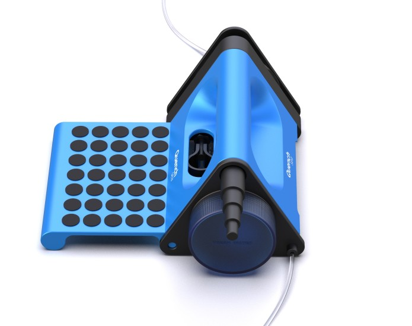
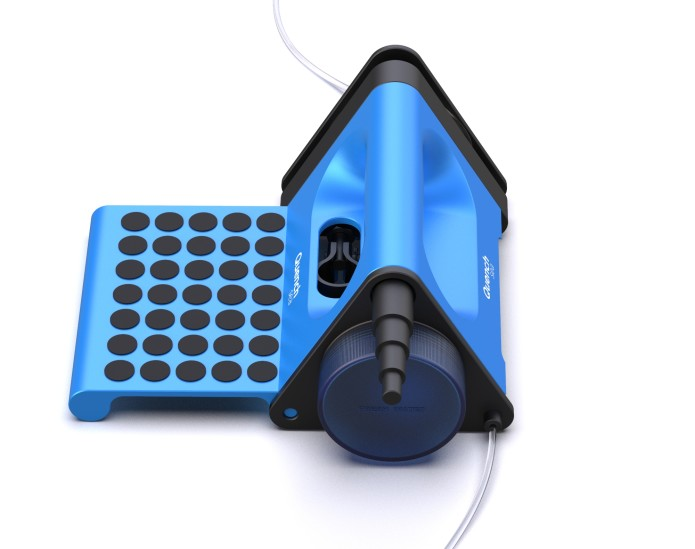

1."TAGNAMARO"
Pour renforcer le proverbe: " l'union fait la force", sensibiliser la population de Toliara notamment ceux d'Androy à nettoyer les alentours et le bord de Toliara pour faciliter les tâches à faire car elles sont les plus touchées...
Pour renforcer le proverbe: " l'union fait la force", sensibiliser la population de Toliara notamment ceux d'Androy à nettoyer les alentours et le bord de Toliara pour faciliter les tâches à faire car elles sont les plus touchées...
Une fois nettoyé, nous pouvons installer le tuyau PRV servant au transport à grande distance et en grandes quantités de fluides. Et le Quench Sea c'est pour extraire le sel pour donner de l'eau potable.
 
